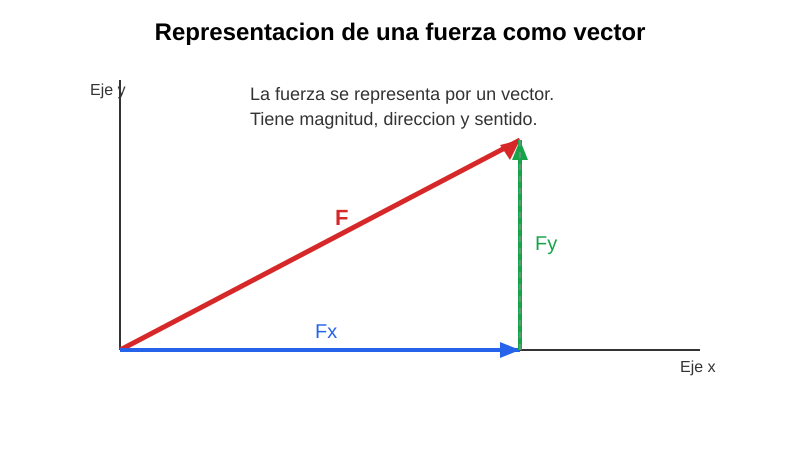
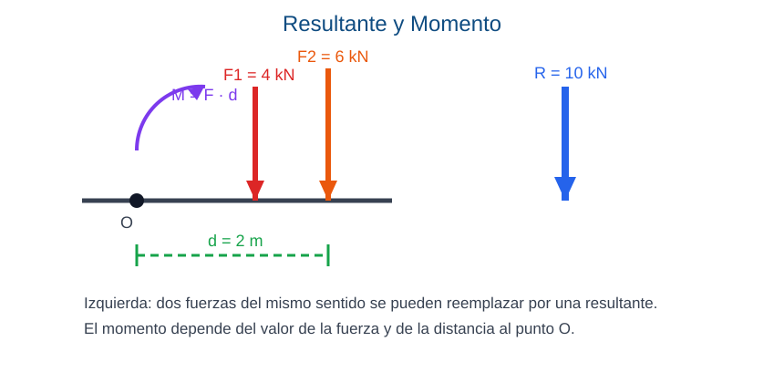
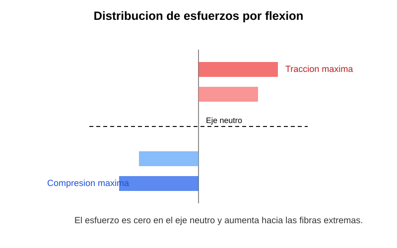
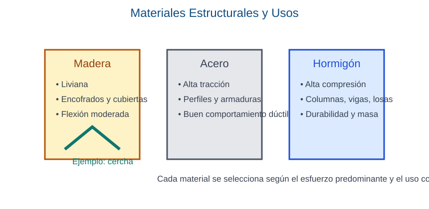
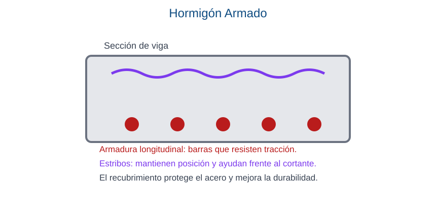
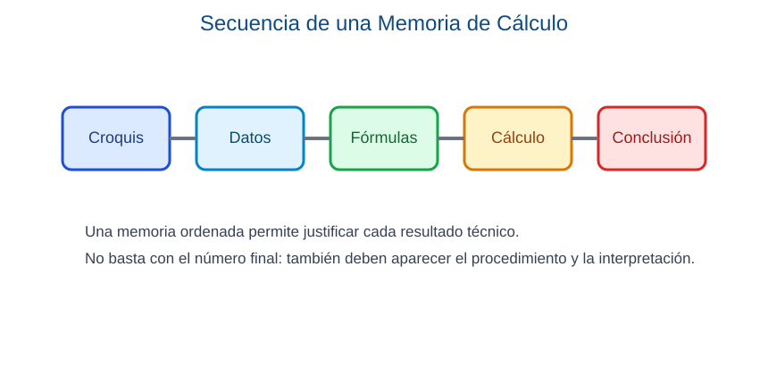

Material del Estudiante - Resistencia de Materiales
Disciplina: Resistencia de Materiales
Bachillerato: Técnico en Construcciones Civiles (BTCC) | Curso: Segundo Curso
Institución: Colegio Nacional Defensores del Chaco | Turno: Mañana | Sección: A
Docente: Christhian Keim | Año lectivo: 2026
Este material está organizado en fichas de una hoja por tema. Cada ficha incluye capacidad, propósito, lectura guiada, gráfico explicativo y ejercitario resoluble con la información de la misma página.
Ficha 1 - Introducción a la Resistencia de Materiales
Capacidad: Interpreta la finalidad de la Resistencia de Materiales como estudio de sólidos deformables. Reconoce fuerzas, cargas, acciones y vectores aplicados a estructuras.
Propósito: Comprender el campo de estudio de la asignatura y establecer conceptos iniciales para el análisis técnico de elementos estructurales.
Desarrollo conceptual
La Resistencia de Materiales estudia el comportamiento de los cuerpos sólidos cuando actúan sobre ellos cargas externas. Su finalidad es explicar cómo resisten, se deforman o fallan los elementos estructurales.
Lectura guiada
En una obra, casi todos los elementos están sometidos a cargas. Una columna soporta el peso de vigas, muros y losas; una viga recibe cargas del techo, del piso o de las personas; un andamio resiste trabajadores, herramientas y materiales; y una cubierta puede recibir viento, lluvia y peso propio.
Cuando una carga actúa sobre un elemento, este responde generando esfuerzos internos. Si la carga es pequeña y el material trabaja dentro de su capacidad, la deformación puede ser reducida y segura. Si la carga es excesiva, el elemento puede deformarse demasiado, fisurarse o colapsar.
También es importante distinguir entre la acción externa y la respuesta interna: la fuerza o carga actúa desde afuera; el esfuerzo se produce dentro del material; y la deformación es el cambio visible o medible del elemento.
Definiciones clave
- Fuerza: acción capaz de producir movimiento, deformación o equilibrio.
- Carga: fuerza aplicada sobre un elemento estructural.
- Esfuerzo: respuesta interna de un cuerpo frente a una carga.
- Tensión: intensidad del esfuerzo sobre una sección.
- Deformación: cambio de forma o longitud.
Comparación técnica
| Concepto | Idea principal |
|---|---|
| Fuerza | Acción externa |
| Carga | Fuerza aplicada a una estructura |
| Esfuerzo | Respuesta interna del material |
| Deformación | Cambio visible o medible |
Gráfico

Explicación del gráfico: la flecha roja representa la fuerza F. Su longitud sugiere la magnitud, su inclinación muestra la dirección y la punta indica el sentido. Las componentes Fx y Fy ayudan a descomponer la fuerza para estudiarla.
Ejemplo aplicado: si una bolsa de cemento está apoyada sobre una losa, su peso actúa hacia abajo como una carga. La losa resiste esa acción y transmite parte del esfuerzo a las vigas y columnas.
Activación de saberes previos
- ¿Qué entiendes por carga en una estructura?
- ¿Dónde observas fuerzas en una obra?
- ¿Qué diferencia puede haber entre una fuerza pequeña y una grande?
Ejercitario
- Define fuerza, carga, esfuerzo, tensión y deformación.
- Dibuja un vector horizontal, uno vertical y uno inclinado.
- Clasifica cuatro cargas de una obra como estáticas o dinámicas.
- Explica por qué la seguridad técnica es importante al estudiar estructuras.
Ficha 2 - Fuerzas, Resultantes y Momento
Capacidad: Calcula resultantes de fuerzas concurrentes y no concurrentes. Comprende el momento de una fuerza y su efecto de rotación.
Propósito: Resolver composiciones simples de fuerzas y comprender el efecto de giro producido por el momento.
Desarrollo conceptual
Cuando varias fuerzas actúan sobre un punto o sobre una estructura, pueden reemplazarse por una resultante. El momento permite medir la tendencia de una fuerza a producir giro alrededor de un punto.
Lectura guiada
En construcción no siempre actúa una sola carga. Sobre una viga pueden apoyarse varios pesos al mismo tiempo: materiales, personas, tabiques o equipos. Para estudiar el efecto total de esas acciones, muchas veces se las reemplaza por una sola fuerza llamada resultante.
Si las fuerzas tienen el mismo sentido, la resultante se obtiene sumando sus valores. Si actúan en sentidos contrarios, la resultante surge de la diferencia entre ambas y conserva el sentido de la mayor. El momento aparece cuando la fuerza actúa a una distancia del apoyo o punto de giro.
Definiciones clave
- Resultante: fuerza única equivalente a varias fuerzas.
- Momento: efecto de giro de una fuerza.
- Fuerzas concurrentes: actúan sobre un mismo punto.
- Fuerzas paralelas: tienen igual dirección.
Comparación técnica
| Concepto | Característica |
|---|---|
| Resultante | Resume el efecto de varias fuerzas |
| Momento | Explica la rotación |
| Fuerza concurrente | Mismo punto de aplicación |
| Fuerza paralela | Misma dirección |
Gráfico

Explicación del gráfico: las fuerzas `F1 = 4 kN` y `F2 = 6 kN` pueden reemplazarse por la resultante `R = 10 kN`. La distancia `d = 2 m` respecto del punto O permite calcular el momento y comprender la tendencia al giro.
Ejemplo aplicado: si dos pilas de ladrillos descargan sobre una misma viga, la estructura recibe la suma de ambas cargas. Si una se coloca lejos del apoyo, el efecto de giro es mayor.
Ejercitario
- Suma dos fuerzas de `4 kN` y `6 kN` del mismo sentido.
- Calcula la resultante de `9 kN` y `5 kN` en sentido contrario.
- Calcula el momento de una fuerza de `10 N` aplicada a `2 m`.
- Menciona un ejemplo de obra donde sea importante el momento.
Ficha 3 - Equilibrio, Vínculos y Reacciones
Capacidad: Aplica condiciones de equilibrio en el plano. Analiza vínculos y calcula reacciones en apoyos de estructuras simples.
Propósito: Aplicar condiciones de equilibrio para interpretar apoyos y reacciones en estructuras simples.
Desarrollo conceptual
Una estructura está en equilibrio cuando la suma de fuerzas y la suma de momentos es igual a cero. Los apoyos generan reacciones que compensan las cargas aplicadas.
Lectura guiada
En toda estructura los apoyos cumplen una función esencial. Una viga simplemente apoyada no se mantiene en su lugar solo por su peso: necesita reacciones en los apoyos para equilibrar las cargas que recibe.
Definiciones clave
- Equilibrio: estado sin movimiento ni giro.
- Vínculo: apoyo o restricción de un elemento.
- Reacción: fuerza generada por el apoyo.
- Diagrama de cuerpo libre: esquema con todas las fuerzas.
Comparación técnica
| Apoyo | Característica |
|---|---|
| Móvil | Permite desplazamiento horizontal |
| Fijo | Restringe más movimientos |
| Empotramiento | Resiste desplazamiento y giro |
Gráfico

Explicación del gráfico: la carga P actúa hacia abajo. Las reacciones RA y RB actúan hacia arriba y equilibran la estructura.
Ejercitario
- Dibuja una viga con dos apoyos y una carga puntual.
- Explica la diferencia entre apoyo móvil y fijo.
- ¿Qué sucede si una reacción no compensa la carga?
- Describe un caso de pérdida de equilibrio en obra.
Ficha 4 - Tracción, Compresión y Ley de Hooke
Capacidad: Analiza elementos sometidos a tracción y compresión. Relaciona carga, área, tensión, deformación y módulo de elasticidad.
Propósito: Relacionar carga, área, tensión y deformación en piezas sometidas a esfuerzos axiales.
Desarrollo conceptual
Una pieza trabaja a tracción cuando se estira y a compresión cuando se acorta. La tensión normal puede calcularse con `σ = P / A`.
Lectura guiada
Muchos elementos de obra trabajan con esfuerzos axiales. Un tensor de acero se estira cuando recibe tracción. En cambio, una columna recibe cargas verticales que tienden a comprimirla.
Si la misma carga actúa sobre un área pequeña, la tensión será mayor. Si el área aumenta, la tensión disminuye. Dentro del límite elástico, el material recupera su forma inicial cuando desaparece la carga.
Definiciones clave
- Tracción: esfuerzo que tiende a alargar.
- Compresión: esfuerzo que tiende a acortar.
- Tensión normal: carga repartida sobre un área.
- Elasticidad: capacidad de recuperar la forma inicial.
Comparación técnica
| Tracción | Compresión |
|---|---|
| Alarga el elemento | Acorta el elemento |
| Típica en cables y tensores | Típica en columnas y pilares |
Gráfico

Explicación del gráfico: a la izquierda las fuerzas tiran del elemento y lo alargan. A la derecha las fuerzas empujan hacia el centro y lo acortan. Debajo se recuerda la relación `σ = P / A`.
Ejemplo aplicado: los alambres de tensado de una cubierta trabajan a tracción. Los pilares de hormigón que sostienen una losa trabajan principalmente a compresión.
Ejercitario
- Calcula la tensión de una barra con `12 000 N` y `200 mm²`.
- Explica por qué una columna trabaja a compresión.
- ¿Qué ocurre si se supera el límite elástico?
- Compara el comportamiento del acero y la madera frente a tracción.
Ficha 5 - Cortante y Momento Flector
Capacidad: Identifica esfuerzo cortante y momento flector en piezas de plano medio. Representa leyes de esfuerzos en vigas simples.
Propósito: Reconocer esfuerzos internos y representar diagramas básicos en vigas simples.
Desarrollo conceptual
Cuando una viga está cargada aparecen esfuerzos internos. El cortante se asocia al deslizamiento entre secciones y el momento flector a la curvatura del elemento.
Lectura guiada
Cuando una viga soporta cargas, en su interior no aparece un solo tipo de respuesta. El cortante intenta que una parte de la sección se deslice respecto de la otra. El momento flector provoca curvatura y hace que la pieza se doble.
Si la viga muestra un descenso en el centro, se está manifestando el efecto del momento flector. Si aparecen fisuras inclinadas cerca de los apoyos, puede haber problemas asociados al cortante.
Definiciones clave
- Cortante: esfuerzo interno que tiende a cortar una sección.
- Momento flector: esfuerzo que curva la viga.
- Esfuerzo interno: reacción resistente dentro del material.
Comparación técnica
| Cortante | Momento flector |
|---|---|
| Tiende a cortar | Tiende a curvar |
| Se analiza por secciones | Se asocia a la flexión |
Gráfico

Explicación del gráfico: la viga recibe una carga `P`. En una sección interna aparecen el cortante `V`, que intenta deslizar, y el momento `M`, que produce curvatura. La zona central suele ser importante para el momento flector.
Ejemplo aplicado: en una viga de techo cargada con tejas o chapas, el cortante suele ser significativo cerca de los apoyos y el momento flector en el tramo central.
Ejercitario
- Define cortante.
- Define momento flector.
- ¿Dónde se espera mayor flexión en una viga con carga central?
- Explica por qué estos esfuerzos importan en obra.
Ficha 6 - Flexión y Propiedades Geométricas de Secciones
Capacidad: Analiza el comportamiento de un elemento estructural sujeto a flexión. Calcula propiedades básicas de secciones y reconoce fibras comprimidas y traccionadas.
Propósito: Interpretar la flexión de una viga y comprender la importancia del eje neutro y de la forma de la sección.
Desarrollo conceptual
Cuando una viga se flexiona, unas fibras se traccionan y otras se comprimen. Entre ambas se encuentra el eje neutro, donde el esfuerzo es aproximadamente cero.
Definiciones clave
- Flexión: deformación curvada de una pieza.
- Eje neutro: zona donde el esfuerzo por flexión es nulo.
- Fibra extrema: parte más alejada del eje neutro.
- Momento de inercia: propiedad geométrica ligada a la resistencia a flexión.
Comparación técnica
| Zona traccionada | Zona comprimida |
|---|---|
| Se alarga | Se acorta |
| Aparece en una cara | Aparece en la cara opuesta |

Gráfico 1: el esfuerzo es cero en el eje neutro y aumenta hacia las fibras extremas.

Gráfico 2: la curva elástica representa la deformación de la viga.
Ejercitario
- Define eje neutro.
- Explica por qué las fibras extremas reciben mayor esfuerzo.
- Dibuja una sección rectangular y marca tracción, compresión y eje neutro.
- Explica cómo influye la forma de la sección en la resistencia.
Ficha 7 - Materiales Estructurales, Muros y Cerchas
Capacidad: Determina propiedades mecánicas básicas de madera, acero y hormigón. Clasifica pilares, columnas, muros, cerchas, andamios y encofrados según su función resistente.
Propósito: Relacionar las propiedades de los materiales estructurales con su uso en diferentes elementos resistentes.
Desarrollo conceptual
Cada material responde mejor a determinadas solicitaciones. La selección correcta mejora la seguridad, la economía y la durabilidad de la obra.
Lectura guiada
La madera es liviana y muy útil en estructuras temporales, cubiertas y encofrados. El acero posee gran resistencia, especialmente frente a tracción. El hormigón trabaja muy bien a compresión y se emplea en columnas, vigas, losas y fundaciones.
Una cercha necesita piezas capaces de trabajar con tracción y compresión en forma combinada. Una columna esbelta puede fallar por pandeo si su relación altura-sección es desfavorable.
Definiciones clave
- Madera: material liviano, útil en compresión y flexión moderada.
- Acero: material muy resistente, especialmente a tracción.
- Hormigón: material resistente a compresión.
- Cercha: estructura triangulada para cubiertas.
Comparación técnica
| Material | Uso frecuente |
|---|---|
| Madera | Encofrados, cubiertas, estructuras livianas |
| Acero | Barras, perfiles, armaduras |
| Hormigón | Columnas, vigas, losas, fundaciones |
Gráfico

Explicación del gráfico: el esquema compara madera, acero y hormigón con propiedades generales y usos frecuentes. También aparece una cercha simple como ejemplo de estructura triangulada.
Ejemplo aplicado: una estructura liviana de techo puede resolverse con madera o acero. Una columna de varios niveles suele requerir hormigón armado o acero estructural.
Ejercitario
- Completa un cuadro comparativo entre madera, acero y hormigón.
- ¿Qué material resiste mejor tracción?
- ¿Qué riesgo presenta una columna muy esbelta?
- ¿Qué función cumple una cercha?
Ficha 8 - Hormigón Armado y Control Técnico
Capacidad: Reconoce el comportamiento conjunto acero-hormigón. Distingue solicitaciones y puntos críticos de control en elementos de hormigón armado de baja complejidad.
Propósito: Comprender el trabajo conjunto del acero y del hormigón en elementos estructurales básicos.
Desarrollo conceptual
El hormigón resiste bien la compresión y el acero resiste bien la tracción. Por eso el hormigón armado combina ambos materiales.
Lectura guiada
El hormigón armado une dos materiales complementarios. El hormigón soporta muy bien la compresión, mientras que el acero se encarga de resistir las tracciones que aparecen en vigas, losas y otros elementos.
Dentro de una viga de hormigón armado se colocan barras longitudinales en la zona donde se espera tracción y estribos para colaborar con el cortante y mantener la armadura en posición. El recubrimiento protege el acero contra la humedad y la corrosión.
Definiciones clave
- Hormigón armado: combinación de hormigón y acero.
- Armadura longitudinal: barras principales.
- Estribo: barra transversal de sujeción.
- Recubrimiento: espesor de hormigón que protege el acero.
Comparación técnica
| Hormigón | Acero |
|---|---|
| Resiste compresión | Resiste tracción |
| Protege y envuelve | Refuerza zonas críticas |
Gráfico

Explicación del gráfico: la figura muestra una sección simple de viga. Las barras inferiores representan la armadura longitudinal. La línea superior representa los estribos. Todo queda envuelto por el hormigón.
Ejemplo aplicado: en una viga de entrepiso, el hormigón resiste gran parte de la compresión mientras el acero de la zona inferior ayuda a soportar la tracción por flexión.
Ejercitario
- Define hormigón armado.
- Explica por qué el acero se ubica en zonas traccionadas.
- Menciona tres controles antes del hormigonado.
- Dibuja una viga con armaduras.
Ficha 9 - Integración y Memoria de Cálculo
Capacidad: Integra conocimientos de cargas, equilibrio, esfuerzos y materiales para verificar una estructura simple y comunicar resultados técnicos.
Propósito: Integrar contenidos del año mediante una producción técnica ordenada.
Desarrollo conceptual
La memoria de cálculo permite registrar datos, fórmulas, operaciones y conclusiones de manera clara y verificable.
Lectura guiada
En la práctica técnica no alcanza con obtener un resultado numérico. Es necesario mostrar cómo se llegó a ese valor. Para eso se elabora una memoria de cálculo, que ordena el trabajo en una secuencia comprensible.
Una memoria breve puede incluir: croquis del problema, datos conocidos, fórmulas utilizadas, reemplazo numérico, resultado y conclusión técnica. Este orden facilita la revisión del procedimiento y permite detectar errores.
Definiciones clave
- Croquis: dibujo técnico simplificado.
- Memoria de cálculo: registro ordenado del procedimiento.
- Conclusión técnica: interpretación del resultado.
Comparación técnica
| Ejercicio suelto | Memoria de cálculo |
|---|---|
| Puede quedar incompleto | Exige orden y justificación |
| Resuelve una parte | Explica el proceso completo |
Gráfico

Explicación del gráfico: la memoria de cálculo se organiza en cinco pasos: croquis, datos, fórmulas, cálculo y conclusión. El resultado final debe estar acompañado del procedimiento.
Ejemplo aplicado: si se analiza una viga simplemente apoyada, primero se dibuja el croquis, luego se anotan la luz y la carga, después se aplica la fórmula y finalmente se interpreta el resultado.
Ejercitario integrador
- Dibuja una viga simplemente apoyada con carga puntual.
- Indica cargas, reacciones y esfuerzo principal esperado.
- Elige un material para una columna baja y justifica.
- Presenta una memoria breve con datos, fórmula, resultado y conclusión.